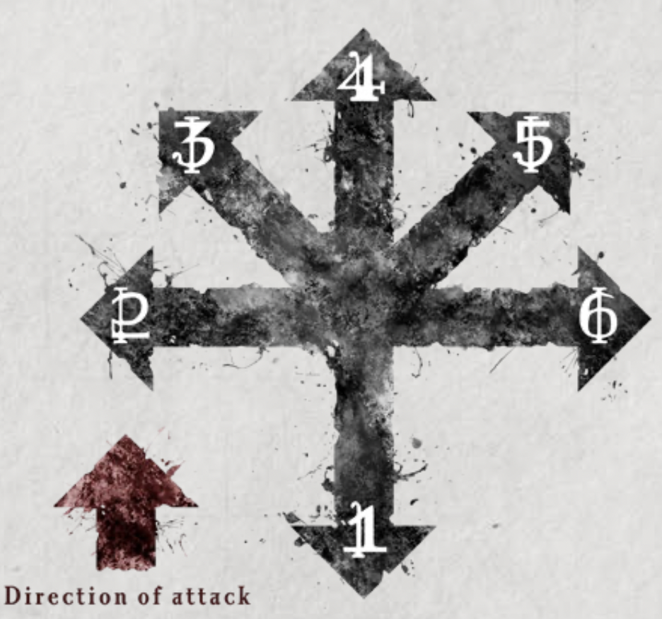

- Made using Ballistic Skill (A) Test
- Have three effective ranges:
- Short range: +1 bonus to Ballistic Skill (A) Test
- Medium range: No modifier
- Long range: Target gains a +2 Defence
- Beyond long range, any ranged attack misses
- Cannot fire a ranged weapon while engaged unless it has the Pistol trait
Ammo and Reloading
- Start play with all weapons loaded and 3 points of Ammo of any type
- Ammo can be lost through complications or spent when you need to reload
- Ammo can only be acquired, shared, or given if it makes sense narratively
Reloading
- A Simple Action can be used to Reload 1 ranged weapon, expending 1 point of ammo
- This may be required to fire your weapon after using a Salvo Option or due to a Complication
- If you don’t use a Simple Action to Reload a weapon when required, the weapon can’t be used again until it is Reloaded
- Note: Single-use throwing weapons (such as grenades) have Salvo ‘-’, so one Ammo is spent for each attack instead of Reloading
Salvo Options
- Most ranged weapons have a Salvo rating which is used for the following options
- After use the weapon must be Reloaded before it can be used again
- A weapon with a Salvo of ‘-’ can’t be used for Salvo options
Full Auto
- Single target
- Gain a number of bonus dice to your Attack Test equal to the weapon’s Salvo value
Spray Shot
- Multi-target
- Used as part of a Multi-Attack to reduce the DN of the Test by the weapon’s Salvo value
- Can’t decrease the DN by more than the penalty imposed by the Multi-Attack
Spray Shot vs Mobs
- As a Full Round Action, target a Mob with a Spray Shot
- Make a ranged attack test as normal
- If attack is successful, you hit an additional number of individuals in the Mob equal to the weapon’s Salvo value
Firing into Melee
- When firing into melee, if a Wrath Complication is rolled the ranged attack is made against a random target in the melee instead of the chosen one
- The Aim combat option can be used to negate the penalties for firing into melee instead of taking the regular Aim bonus
AoE Weapons
- Have the Blast (X) trait
- When fired/thrown, choose any point in range then make a DN 3 Ballistic Skill (A) Test
- Apply range effects as normal unless using a thrown weapon
- If the test fails – attack misses and scatters
- On a success, the explosion is centred on target
- The Blast rating determines the radius of the explosion in metres, any one in the radius is hit by the attack
- When targeting a Mob, the number of individuals in the Mob hit by the explosion is equal to half the Blast rating
- Cannot Shift to increase damage of a Blast weapon
- Critical hit effects apply to all targets hit by the attack
Scattering
- On a miss, roll 2d6 to determine scatter
- First for direction
- Second for distance ×2m the attack deviates by

Dodging AoE Attacks
- If you are caught in a Blast radius or hit by a Flamer, you may attempt the Full Defence combat option adding 1+ Icons rolled to your Resilience instead of your Defence
- The GM may decide that some area effect attacks can’t be dodged or avoided
- Area effect attacks with Blast (6) or more, or a radius of over 10m are usually too big to escape in this way